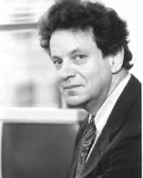

Please note: the AAS Obituaries are temporarily being hosted on this website while their full content is being ingested into the PubPub publishing platform newly adopted by the Bulletin of the American Astronomical Society. When the migration is complete, your existing links will take you to the final, migrated content. Contact peter.williams@aas.org with any questions.
Leonid M. Ozernoy (1939-2002)
Dr. Leonid Ozernoy, a well-known astrophysicist trained in the former Soviet Union, died on 28 February 2002 after a long illness. Born on 19 May 1939 in Moscow, Leonid Ozernoy earned degrees in astronomy and physics from Moscow University. He received his doctorate in physics and mathematics in 1971 from the P. N. Lebedev Physics Institute in Moscow, where he worked as a senior research scientist from 1971-1986. He completed his dissertation under the guidance of Dr. Vitaly Ginzburg, one of the most senior Soviet astrophysicists. Dr. Ozernoy was a prolific scientist with a broad array of interests in fields as diverse as cosmology, active galaxies and quasars, black holes, pulsars, and the evolution of the solar system. He made many fundamental contributions to these areas as author or coauthor of over 280 scientific publications, as well as several books. In particular, he performed groundbreaking studies of the central black hole in the Galactic nucleus, and the astrophysics of magnetoid objects, postulated to exist in the centers of active galaxies.
Dr. Ozernoy began his career in the former Soviet Union during a time of great duress for Jewish scientists. Due to his religious heritage, and his support of fellow dissident Andrei Sakharov, Soviet authorities blocked him from accepting a visiting professorship at Harvard in 1979. As a result of his unsuccessful visa request and resulting status as a refusenik, Dr. Ozernoy was dismissed from his position as Assistant Professor at Moscow Physics & Technology Institute, and was also forbidden from publishing his research. Eventually, through the intervention of United States Senator Edward M. Kennedy, Soviet President Mikhail Gorbachev allowed Dr. Ozernoy to immigrate with his family to the United States in 1986.
In the United States, Dr. Ozernoy held positions as a visiting scientist at Harvard University, Boston University, Los Alamos National Laboratory, and NASA/Goddard Space Flight Center before joining the faculty of George Mason University in 1993. He was promoted to full professor of physics and computational sciences in 2001. During this period of time, he focused his attention mainly on studies of the zodiacal light and the associated problem of the computational dynamics of the solar system. He continued an active schedule of research and teaching at Mason until shortly before his death, and is fondly remembered by his many colleagues, collaborators, and friends.
Dr. Ozernoy is survived by wife of 33 years, Maryanne Ozernoy, and daughters Ilana Ozernoy and Alisa Ozernoy Kuperman.
Obituary written by: Peter A. Becker (George Mason University)
BAAS Citation: BAAS, 2002, 34, 1371
SAO/NASA ADS Bibcode: 2002BAAS...34.1371B